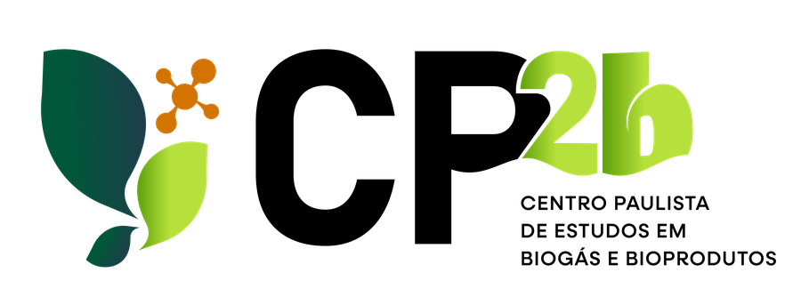
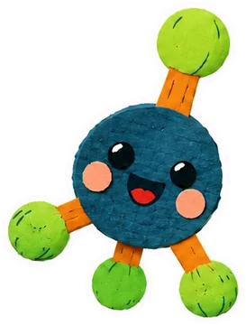
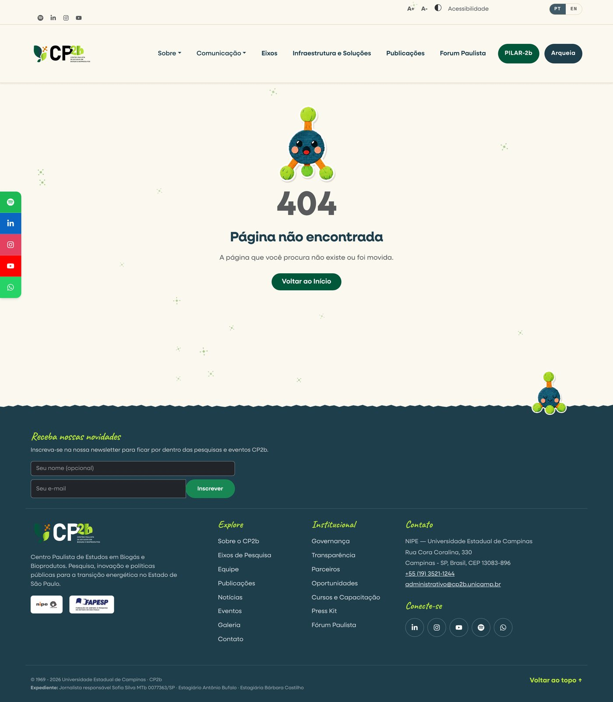
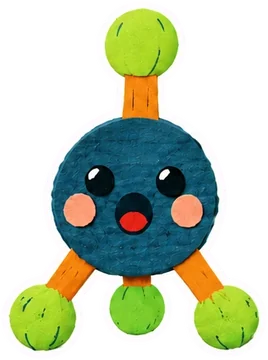
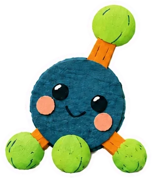
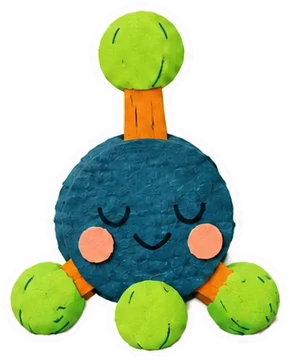
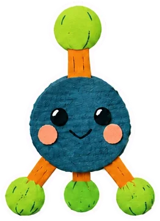

Relatório visual · outubro de 2026
O novo site
do CP2b
Tudo o que mudou de 15/09 a 15/10/2026, mostrado com prints reais do antes e do depois.

Nova identidade "papel"
Metaninho, o mascote
2 páginas novas
5 páginas reformuladas
Mais leve e seguro
Centro Paulista de Estudos em Biogás e Bioprodutos · cp2b.unicamp.br
Visão geral
Um mês de mudanças em um olhar
19
pacotes de mudança publicadosdo nº 105 ao 124 no GitHub
2
páginas novasCursos e Capacitação · HQ do Metaninho
5
páginas reformuladasSobre · Eixos · Soluções · Publicações · Equipe
20
páginas internas com a nova identidadefaixa de papel kraft em todas
0
vulnerabilidades no servidoreram 5 (2 altas)
15/09
Site mais leve
carrega só a página aberta
25/09
Conteúdo novo
Eixos, Soluções, Publicações e Equipe
26/09
Cursos e Capacitação
+ celular, segurança e Google
28/09
Movimento
animações, filtros e régua de TRL
29/09
Identidade "papel"
+ Metaninho
a grande virada visual
02/10
Newsletter e galeria
planilha semanal, legendas, YouTube/Spotify
09/10
Painel e segurança
salvar sem erro, sistema atualizado
13/10
HQ do Metaninho
leitor online + PDF para imprimir
conteúdo e base
páginas e experiência
identidade visual
painel e bastidores
Onde estão as novidadesO menu do site, marcado
Cada selo mostra o que é novo ou mudou. Siga as cores nos próximos slides.
Sobre
Comunicação
EixosRenovado
Infraestrutura e SoluçõesNome novo + renovado
PublicaçõesNome curto + renovado
Fórum Paulista
PILAR-2bArqueia
Sobre ▾
Visão Geral Renovado
Governança
Indicadores
Transparência
Parceiros
Equipe Renovado
Oportunidades
Eventos
Cursos e Capacitação Novo
Comunicação ▾
Notícias
Microscópio
Entrevistas
Podcast
Boletins
Galeria
Press Kit
Metaninho (HQ) Novo
Newsletter
Novonão existia
Renovadorefeita por dentro
Nome novorenomeado no menu
O MENU REAL · ANTES
DEPOIS
Em todas as páginas: identidade "papel" e rodapé novo. Fora da Home: o Metaninho no rodapé — clique nele!
Links de YouTube e Spotify atualizados no topo, na barra lateral e no rodapé.
Identidade visualDo cinza digital ao papel recortado
O site agora tem a mesma cara dos vídeos educativos do CP2b: papel, fita crepe e letra à mão.
ANTES · 15/09
Faixa escura em degradê, fundo cinza e botão azul genérico.
O que mudou no depois (veja os números →)
- 1Etiqueta escrita à mão, presa com fita
- 2Foto real "colada" como cópia impressa
- 3Faixa de papel kraft com borda rasgada
DEPOIS · HOJE
- 4Menu com nomes novos
- 5Botões PILAR-2b e Arqueia em cor chapada
- 6Mesmo menu agora nas 5 páginas de Sobre
Identidade visual
As peças do "papel", de perto
Etiqueta à mão + fita crepeno lugar dos rótulos em caixa-alta
Foto real "colada"em 11 páginas: Sobre, Equipe, Eixos, Soluções…
Cartão = folha de papelsombra curta e fita no topo
Borda rasgadano fim da faixa de título e no rodapé
Sai o azul genéricocontroles em tom de papel
Degradê vira cor chapadabotões em pílula, cores da marca
Paleta
Papel
#FBF8F0
Kraft
#F3EAD8
Petróleo
#1E3E4C
Verde-escuro
#00573A
Lima
#B6E03B
Âmbar
#D37402
Letras
Neulis
títulos e textos (como antes)
Caveat, à mão
só em etiquetas curtas — nunca em texto corrido
O lima fica só nos detalhes (filetes e marca-texto): em letra pequena ele fica difícil de ler.
Rodapé e página de erro
Até o "não encontrado" ganhou vida
ANTES
cp2b.unicamp.br/pagina-que-nao-existe
DEPOIS
cp2b.unicamp.br/pagina-que-nao-existe

1
2
3
4
5
6
- 1
Metaninho surpresorecebe quem se perdeu · clique nele!
- 2
Acentos corrigidos"Pagina nao encontrada" → "Página não encontrada"
- 3
Metaninho sentado no rodapé clique nele!
- 4
Borda de papel rasgado
- 5
Títulos escritos à mão
- 6
Novo linkCursos e Capacitação
Os dois Metaninhos (1 e 3) falam quando você clica. Veja no próximo slide.
Novo personagemConheça o Metaninho
A molécula de metano (CH₄) de papel recortado, mascote oficial do CP2b.
Novo
6 poses de papel recortado

Surpresopágina 404 ou conteúdo inexistente

Curiosobusca ou filtro sem resultado
Felizmensagem enviada, inscrição feita

Tranquilonada publicado ainda · manutenção

Neutropose padrão
Mais um segredo
Em /equipe, busque "metaninho": aparece o cartão do mascote.
Clique no Metaninho!Ele dá um pulinho e
fala uma frase num balão.
1Clique (ou tecle Enter)
2Pulinho
3Balão com uma frase
Na página 404
"Essa página virou gás!"
No rodapé de toda página interna
"Oi! Eu sou o Metaninho: um carbono e quatro hidrogênios."
As frases mudam a cada clique e o balão some sozinho. Funciona também no teclado e no leitor de tela.
Página nova · Comunicação → Metaninho
HQ "Metaninho no Intercocen"
Novo
cp2b.unicamp.br/metaninho
- 1
Leitor com virada de página2 páginas no computador · 1 no celular
- 2
Vire como preferirclique na página, deslize o dedo ou use ← →
- 3
Tela cheia e barra de progresso
- 4
Versão para imprimir4 folhas A4 → baixe, dobre e grampeie: vira um gibi de 16 páginas
/eixos
Os 8 eixos numa só figura
Renovado
ANTES
Lista de eixos + mapa mental com texto longo, que rolava para os lados.
DEPOIS
cp2b.unicamp.br/eixos
1
2
3
4
- 1
Cor e ícone próprios por eixousados da figura ao detalhamento
- 2
Logo do CP2b ao centro
- 3
Os 2 coordenadores com o mesmo destaquenão existe mais "coordenador adjunto"
- 4
Clique → abre o eixoescopo, ODS, competências e projetos
O que abre ao clicar (4): o eixo com escopo, ODS, competências e projetos.
/eixos · nova faixaDo resíduo à energia, em 5 etapas
A cadeia do biogás contada passo a passo — e quais eixos do CP2b atuam em cada etapa.
cp2b.unicamp.br/eixos · role a página
- A
Ilustraçãomuda a cada etapa
- B
Etiquetas dos eixoslevam direto ao eixo certo
- C
Trilha das 5 etapasacompanha a rolagem
01 · Mapear
Onde está o resíduo
02 · Converter
Digestão anaeróbia
03 · Energizar
Biometano e eletricidade
04 · Valorizar
Nada se perde
05 · Escalar
Da bancada ao território
/solucoes
"Soluções" virou Infraestrutura e Soluções
Nome novo + renovado
ANTES
Um paredão de cartões de texto, sem os laboratórios.
- 1
Título e menu novos
- 2
Régua de TRL 1 a 9em 3 fases: conceito, validação, mercado
- 3
Faixa de cada laboratórioCEMARA, CP2b Lab, PPBIOEN · ● = foco
- 4
Foto real do prédiologo abaixo: a ficha de cada laboratório
/solucoes · novidades
Do problema ao laboratório certo
1Escolha o nível de maturidade
2Veja os laboratórios
3Abra os serviços
4Fale com o CP2b
15
serviços técnicos, cada um com ilustração própriadescrição abre ao clicar · filtros por laboratório e por TRL
/publicacoes
O Ano 1 da ciência do CP2b, em números
Renovado
cp2b.unicamp.br/publicacoes
84%
com pós-graduandosmeta era 80%
76%
coautoria entre instituições
Nuvem de palavras 35 termos e as 12 expressões mais frequentes
Antes era só a lista. Agora cada número traz fonte e período, e a análise completa abre em "Ler a análise completa".
/equipe
A equipe que se conta sozinha
Renovado
! Calculado do próprio cadastro: quando alguém entra ou sai pelo painel, os números se atualizam sozinhos.
64%
da coordenação dos eixos é feminina9 de 14 pessoas
84
de 99 com perfil públicoLattes, ORCID, Scholar…
Filtro que vira link
Filtre e compartilhe o endereço:
/equipe?categoria=eixo-2
Os cartões deslizam até o novo lugar.
Antes: só os cartões, sem o retrato da equipe.
Página nova · Sobre → Cursos e Capacitação
Cursos do Eixo 6, em uma página
Novo
cp2b.unicamp.br/capacitacao
- 1
Curso-modelo de 16 h"Biogás, Biometano e Bioprodutos para a Transição Energética" · 8 módulos
- 2
Chamada para propostascursos de 4 a 24 h · presencial, online ou híbrido · in company
- 3
Template oficial para baixarWord, 13 seções explicadas na própria página
Como propor um curso
Envie à diretoriadiretoria@cp2b.unicamp.br
O endereço /capacitacao dava
"Página não encontrada".
Movimento
Animações que explicam, não que distraem
Barra de leitura nas notícias e artigos
Contagem regressiva nos eventos
"Faltam 12 dias" · "É amanhã" · "É hoje" · "Acontecendo agora"
(evento fictício, só para demonstrar)
Faixa de título vivao título sobe e o papel acompanha o mouse · 18 páginas
Números que contamos números sobem do zero · Indicadores e Publicações
Filtros que deslizamEquipe, Publicações e catálogo de serviços
Régua de TRL que cresceum laboratório depois do outro
Respeita "reduzir movimento"quem ativa "reduzir movimento" no celular ou computador vê tudo já parado e pronto
No celularRevisado tela por tela
Todas as páginas conferidas em 5 tamanhos de celular e tablet, em português e inglês — nada mais vaza para os lados.
ANTES · /sobre
Menu cortado: rolava de lado
DEPOIS · /sobre
Menu em 2 linhas (3 + 2)
/eixos
Figura dos eixos em coluna
/solucoes
Régua de TRL cabe na tela
/publicacoes
Indicadores em 2 colunas
DesempenhoMais leve: o site abre mais rápido
Menos dados para baixar, principalmente no celular e na primeira visita.
antes depois
Código da primeira telasó a página aberta é baixada
−72%
Vídeo institucional (/sobre)e só carrega quando chega na tela
1,8 MB · 1,0 MB no celular −85%
Fontes da marcaformato woff2
−54%
Guardado para uso offlineo que o navegador baixa na 1ª visita
−43%
um pacote por página vídeo só quando aparece na tela fontes comprimidas páginas já visitadas abrem offline
Bastidores
O que não se vê, mas protege
Bastidores
0 vulnerabilidades no servidoreram 5, sendo 2 altas
Dados pessoais só com logincontatos, inscritos, participantes
Links e textos do painel filtrados
Limite de envios por visitante, não pelo site todo
Cabeçalhos de segurança no servidor
Painel não fica guardado no navegador
Contraste, títulos e textos alternativositens apontados pelo Lighthouse
Sitemap só com páginas que existem
Versão nova chega sem apertar F5
PDF e .docx abrem direto pelo link
Defeso eleitoral: a seção de parceiros públicos fica oculta até 25/10 e volta sozinha em 26/10.
"Enviar planilha agora" ↑
Planilha da newsletter toda segunda, 08h30lista completa de inscritos, por e-mail, para o marketing
Legenda nas fotos da galeriaaparece sob a foto e vira o texto alternativo
Sessão expirou? O formulário não se perdeo login abre por cima e você salva depois
Upload de capa e imagens corrigidocom mensagem de erro clara
Para conferir
Abra o site e confira você mesmo
Novo/capacitacaoCursos e Capacitação
Novo/metaninhoHQ do Metaninho
Renovado/eixosfigura dos 8 eixos + do resíduo à energia
Renovado/solucoesrégua de TRL + "Qual é o seu desafio?"
Renovado/publicacoesAno 1 em números + nuvem de palavras
Renovado/equipeo CP2b em números
Renovado/sobrefolhas de papel + figura dos eixos
Clique no Metaninhono rodapé das páginas internas (e na 404): ele pula e mostra uma mensagem
Clica em mim lá no rodapé!
Obrigado!
cp2b.unicamp.br
Prints feitos em 15/10/2026 em ambiente local, com o código do site em 15/09 (antes) e em 15/10 (depois). Alguns dados de teste (como o evento de exemplo) servem só para demonstrar as funções.